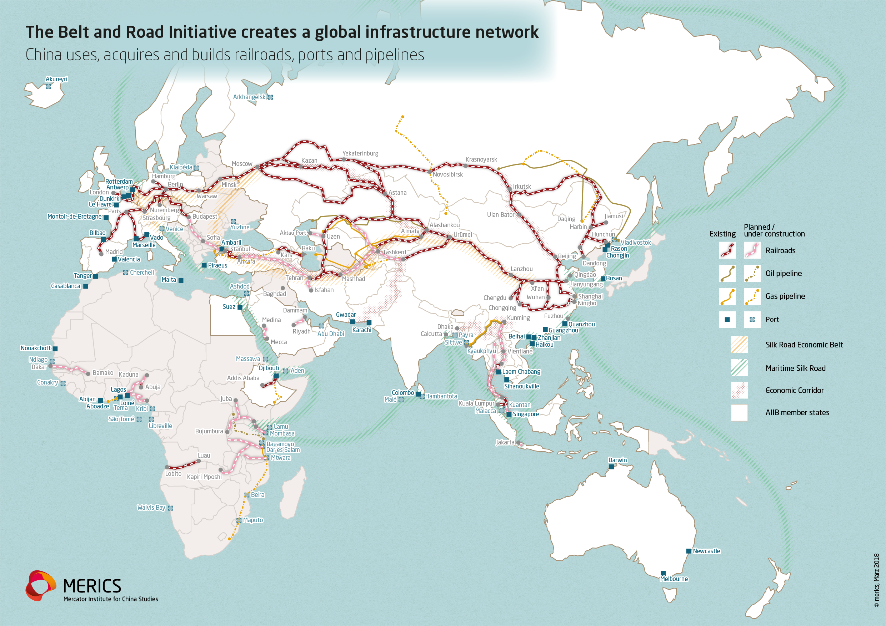
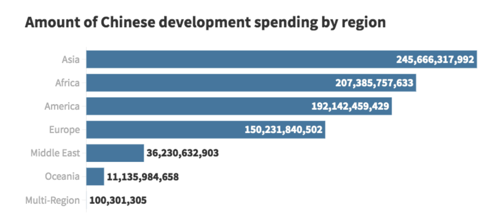
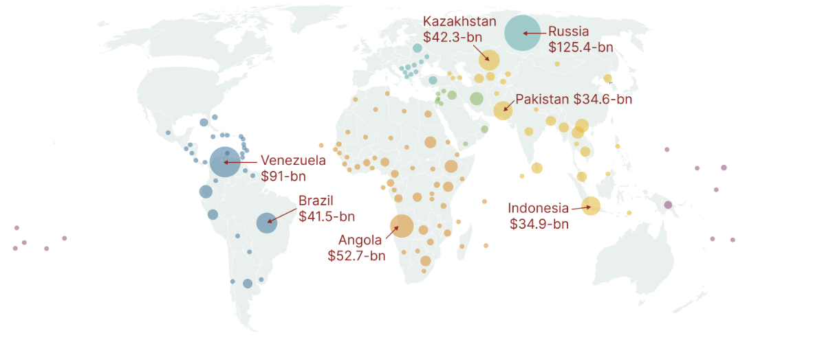
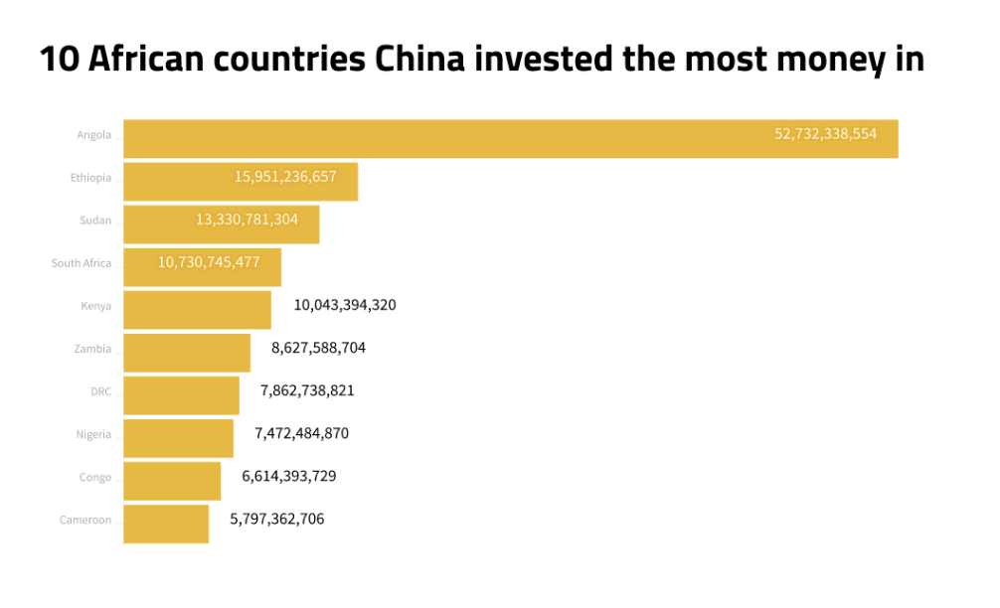
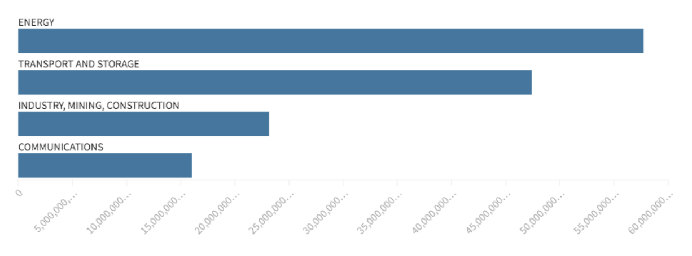
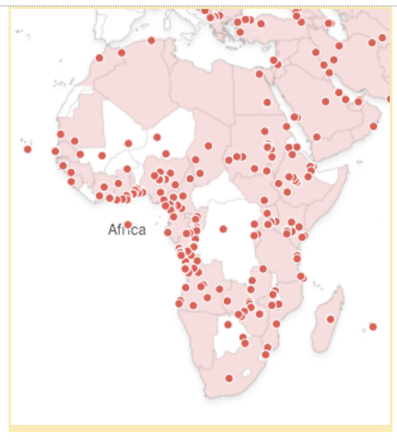

China has spent more than $200-billion in African countries in the past two decades, much of it in the form of loans to finance massive multi-million-dollar infrastructure projects. These form part of a global network of transport, energy, and telecommunications infrastructure known as the Belt and Road Initiative.
We used a data set put together by AidData, an international development research lab based at William & Mary University, in the United States, to explore which countries have received loans or grants from China and some of the major infrastructure projects they have been spent on.

The Belt and Road Initiative (BRI) is a global network of ports, roads, railway lines and pipelines, as well as energy and communications infrastructure that spans across Asia, Europe, Africa and South America.
As Wade Shepard in Forbes put it, these facilities are the “circulatory system of the world along which goods and people flow”.
China’s President Xi Jinping first announced the BRI in September 2013, but the initiative was only formally adopted in 2017, when it was introduced into the Chinese Communist Party constitution.
The goals of the initiative, writes the Mercator Institute for China Studies, is “to connect participating countries’ infrastructure, but also encourage them to open their markets to China and facilitate trade, to link their financial markets to China’s, to strengthen societal (“people-to-people”) relations, and even align their overall economic development policies with China’s.”
China has spent over $840-billion in more than 140 countries over the past two decades, including 52 in Africa, according to AidData.
This money has been spent on building and rehabilitating roads and bridges, ports, railway lines, hydroelectric dam projects, electrification projects, airports, stadiums and even an opera house.
The financing in Africa usually takes the forms of loans rather than aid, and, according to AidData, “collateralisation is the linchpin of China’s implementation of a high-risk, high-reward credit allocation strategy”. For example, in a resource-rich country such as Angola, loans will be linked to oil sales.
Chinese companies also usually build these infrastructure projects.
Belt and Road Initiative projects are not centrally reported and China does not disclose the terms of their loans. However, AidData has collected information about more than 13,000 Chinese development projects – 5,000 of them are in African countries.
In terms of total value, Asian countries have received the largest share of China’s spending ($245.7-billion), but Africa has received the second highest amount ($207.4-billion).

In terms of countries, China has invested the most money in Russia, $125.4-billion, followed by Venezuela, R91-billion, then Angola, $52,7-billion.
Map where China has spent the most money according to AidData

In Africa, China has spent by far the most money in Angola. It has received 25% of the amount spent in the whole of Africa, according to AidData’s research.

The four main areas of investment in Africa are: energy: transport and storage, industry, mining and construction; and communications

The overview map illustrates the scale of the infrastructure projects built and/or financed by Chinese companies.
